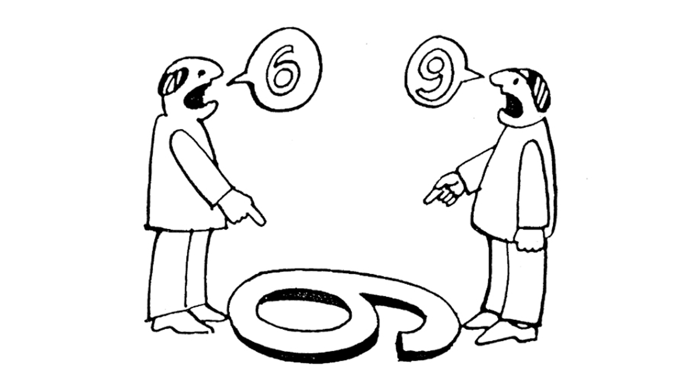

Módulo 2 | Unidade 2
Planejamento, Monitoramento e Avaliação em Saúde - Abordagens Metodológicas e suas Aplicações
Tópico 2
Planejamento em saúde
Neste tópico trataremos do planejamento em saúde. Teremos por objetivo recuperar os marcos históricos do planejamento no SUS, apresentar conceitos e uma abordagem metodológica do planejamento estratégico, na vertente situacional, de forma a potencializar essa atuação. A sua atuação como apoiador técnico e/ou como conselheiro de saúde, pressupõe um conjunto de atividades relacionadas ao planejamento, monitoramento e avaliação das ações e da condução da política de saúde.
O conceito de planejamento
Vamos iniciar esse tópico com uma reflexão sobre os seus conhecimentos sobre o planejamento e a sua utilização na prática cotidiana, a partir das seguintes questões:
Para você o que é o planejamento?
Você planeja as ações que realiza?
Muitas pessoas podem responder a essa questão dizendo que não planejam. Nesse caso, as ações são realizadas de forma improvisada, sem uma reflexão sobre as suas vantagens e desvantagens. Nesse modo de atuação, predomina a influência dos fatores circunstanciais, do momento. Outras pessoas podem responder que planejam, mas fazem isso de forma pouco sistematizada, sem um método para traçar um plano de ação. Alguns, ainda, podem informar que planejam e que consideram o planejamento como um processo técnico político, que deve ser realizado com diferentes atores sociais, de forma a orientar uma ação, programa ou projeto. Se na vida cotidiana de cada um o planejamento pode ser considerado uma opção a ser adotada, na atuação profissional em diferentes áreas como a educação, o urbanismo e a saúde, o planejamento é um processo necessário para a garantia da participação e do direito à cidadania.
Existem várias definições do que seja planejamento. Na concepção de Carlos Matus (1996, p. 57), o planejamento é um "cálculo que precede e preside a ação". Na perspectiva desse autor, o planejamento é entendido como indissociável e orientador da ação, diferenciando-se da ideia do planejamento como uma etapa estanque, que se encerra quando a ação tem início. Para o autor, o planejamento é um pensamento sistematizado, com método, que visa modificar a realidade. Tendo em vista que a realidade é complexa e incerta, o planejamento não visa predizer o que ocorrerá, de forma determinista. Ao invés disso, o planejamento é considerado uma aposta estratégica, que se baseia na capacidade de previsão e de identificação de possibilidades para a criação do futuro.
Ao propor objetivos a serem alcançados, o planejamento dá suporte à tomada de decisão e é fundamental para a gestão em saúde. Conforme Matus (2007), o planejamento é um processo contínuo e permanente de cálculo, definição de ações, de avaliação dos resultados e correção dos planos.
Agora, retome as suas respostas. Você identificou elementos comuns e/ou divergentes com o conceito apresentado? Quais?
O Planejamento Estratégico Situacional
Neste tópico abordaremos uma das vertentes do planejamento, que tem como base a concepção de planejamento ora adotada. Essa forma de planejar se caracteriza por ser participativa, desde a problematização até o monitoramento e avaliação das ações, a partir do envolvimento seja dos gestores, usuários, trabalhadores da saúde, entre outros, e por favorecer o controle social.
O Planejamento Estratégico Situacional (PES) buscou superar os limites identificados na utilização do Método Cendes/Opas, adotado entre países da América Latina na década de 1960 (CHORNY et al., s/d). Na década de 70, foram feitas várias críticas a este método, entre elas, a de que é centrado na técnica, de se restringir ao econômico, de considerar somente a perspectiva do planejador, que está fora da realidade a ser planejada, ignorando todos os outros atores, por se inscrever no campo do determinismo positivista e ignorar o mundo da política, entre outros aspectos. Nesse contexto, Carlos Matus, a partir da sua experiência no cargo de Ministro da Economia do Chile, no governo de Salvador Allende, entre os anos de 1970/1973, formulou o Planejamento Estratégico Situacional (PES), como forma de superar os limites do modelo anterior.
O PES tem sido amplamente utilizado pela sua contribuição teórica e proposta de operacionalização em abordagens metodológicas. Os métodos que compõem o Sistema PES se direcionam a diferentes níveis hierárquicos, natureza do trabalho que se realiza, complexidade do problema, interrelação da gestão e capacidade de governo (MATUS, 2007). São eles:
Planejamento Estratégico Situacional (PES)
Nível central gerencial público, em que se enfrentam problemas de alta complexidade e que demandam um processamento técnico político de alta qualidade.
Método Altadir de Planejamento Popular (MAPP)
Nível local, para o enfrentamento de poucos problemas, de baixa interrelação e complexidade, no qual predomina o processamento prático operacional.
Planejamento por Projetos Orientado por Objetivos (ZOPP)
Nível intermediário, indicado para sistematizar o planejamento. É mais simples que o PES e mais complexo que o MAPP.
O emprego desses métodos pode ser feito de forma combinada. Você poderá identificar na literatura diferentes formas de adequação.
Vamos estudar agora os principais conceitos do PES, que são comuns aos três métodos citados.
Os conceitos de Problema, Ator Social, Situação e Estratégia
No método normativo tradicional, o planejamento se dá a partir de setores ou departamentos. Já no PES, o planejamento tem centralidade em problemas, em que os cidadãos vivenciam os problemas e que os políticos trabalham com esses para solucioná-los. A experiência do planejamento a partir dessa lógica revelou a possibilidade de aproximar o técnico e o político.
No trecho a seguir, pode-se verificar alguns dos elementos que justificam a adoção dos problemas da realidade e não de setores ao se planejar. Reflita sobre essa diferença.
“os problemas reais cruzam os setores e têm atores que se beneficiam ou são prejudicados por eles. Em torno de problemas, a participação cidadã é possível; em torno de setores, é impossível” (HUERTAS, 1996, p. 35).
O que foi possível concluir? Qual a relação que se pode estabelecer com o controle social?
O problema é uma realidade insatisfatória superável, que suscita a ação. Eles se caracterizam como ‘bem-estruturados’, nos quais os sistemas geradores possuem regras claras, invariáveis e pré-determinadas e para os quais existem soluções objetivas precisas; e os problemas ‘quase-estruturados’, em que as regras que determinam o problema não são precisas, nem invariáveis, nem iguais para todos, em que as soluções não existem previamente. O PES volta-se aos problemas ‘quase-estruturados' (MATUS, 1996a).
Um outro conceito importante no PES é o de ator social. Esse conceito se refere aos sujeitos que participam do sistema social, que planejam e governam utilizando para tal distintas perspectivas, a partir da sua inserção, ideologias, interesses e valores. São exemplos de atores o prefeito de uma cidade, o secretário de saúde, conselheiros de saúde, movimentos sociais, entre outras representações da sociedade.
Conforme Matus (2007), nenhum ator possui a capacidade de controlar todas as variáveis envolvidas no processo de condução social. Ao se inserirem na realidade de formas diferentes, os atores têm distintas capacidades de governo.
Para ser considerado um ator, os seguintes critérios devem ser atendidos (ARTMANN, 2000):
Ter base organizativa;
Ter um projeto definido;
Controlar variáveis importantes para a situação.
Pelas múltiplas perspectivas, cada um dos atores explicará a realidade de forma diferente, explicação essa que é a base para a sua ação. Assim, podemos dizer que existirão tantas explicações possíveis quantos forem os atores presentes em uma dada realidade. Essa concepção supera a ideia de uma explicação objetiva e única, presente no diagnóstico tradicional.

Figura 9: Comunicação.
Assim, ao realizarmos um planejamento, devemos considerar todos os atores sociais que produzem fatos na situação problema a ser transformada e as suas explicações. Por exemplo, no Relatório Nacional Consolidado da 16a Conferência Nacional de Saúde (2019, p. 144), vimos o debate refere à "crescente Mineração, que está causando grandes agravos à população e ao meio ambiente”, podemos tomar como atores sociais: os gestores da saúde, dirigentes da Secretaria de Vigilância em Saúde; os órgãos de fiscalização do meio ambiente, como o Instituto Brasileiro do Meio Ambiente e dos Recursos Naturais Renováveis (IBAMA), do Instituto Chico Mendes de Conservação da Biodiversidade (ICMBio); Grandes corporações privadas; lideranças de movimentos sociais associativos, empresários, entre outros. Para um empresário, a situação problema acima pode ser considerada uma atividade econômica e uma oportunidade de ampliação do seu negócio, para uma
liderança indígena, essa situação pode ser explicada como um impedimento do consumo da água do rio, da manutenção da atividade de pesca e dos modos de vida de seu povo.
Para maior compreensão dessa situação problema e dos seus efeitos nos povos indígenas, sugerimos que você assista o vídeo:
A partir desse exemplo, podemos considerar que o que é um problema para um pode não ser para o outro ou pode ser, inclusive, uma solução. Assim, a situação problema é sempre definida por um ator capaz e disposto a enfrentá-la por meio de um plano. Nesse sentido, sempre existirá um ator responsável, que assinará o plano. A partir da inserção do ator que responde pelo plano, será possível identificar operações que estão sob a sua governabilidade, que constarão do Plano de Ação, e de outras operações necessárias, mas que estão fora da sua governabilidade e que só serão realizadas com a cooperação e decisão de outros atores, que serão objeto de um Plano de Demandas.
A explicação da situação problema ou apreciação situacional parte de um ator que considera, além da sua explicação, a forma de explicar de outros atores. Nesse sentido, além de autorreferencial, a apreciação situacional é também policêntrica. Ou seja, busca apreender a realidade em sua totalidade por meio das dimensões econômica, política, cultural, religiosa, ideológica, ecológica, adotando o caráter multidimensional. Nesse sentido, requer conhecimentos interdisciplinares e uma abordagem multissetorial. Possui o caráter dinâmico, ao articular passado, presente e futuro, por meio da identificação das causas envolvidas, da expressão atual e da análise das tendências futuras (ARTMANN, 2000).
Agora, você deve estar se perguntando como tornar possível o planejamento, considerando que a realidade envolve incertezas e que existem outros atores que possuem explicações, objetivos e recursos - econômicos, materiais, organizacionais, de poder, de conhecimento, entre outros - diferentes. A resposta a essa questão passa pelo conceito de estratégia, central para o PES, sendo um dos elementos que o diferencia do planejamento tradicional. É a partir da estratégia que se constrói a viabilidade do Plano de Ação.
Mas, o que é estratégia?
Existem diferentes interpretações possíveis. Na acepção do PES, estratégia é a forma de lidar com os obstáculos, visando vencer resistências e obter a colaboração dos diferentes atores sociais. A partir da estratégia, a situação inicial é transformada na situação objetivo (MATUS, 1996b).
Podemos tomar como exemplo a proposta de "Fortalecimento das Redes de Atenção à Saúde – Atenção Básica, Urgência e Emergência, Rede Cegonha, Doenças Crônicas, Psicossocial e Atenção às Pessoas com Deficiência – de forma ascendente e regionalizada, respeitando as diversidades e contemplando as demandas específicas de todas as regiões de saúde, aperfeiçoando o sistema de regulação, otimizando o sistema de referência e contra referência, por meio de prontuário eletrônico único, revisando a pactuação entre o governo federal, estados e municípios para distribuição justa e proporcional de recursos, garantindo a oferta de consultas, exames, medicamentos e procedimentos em todos os níveis de complexidade” (CONSELHO NACIONAL DE SAÚDE, 2019, p. 158-159). Essa contém elementos de viabilidade para alcance do fortalecimento das Redes de Atenção à Saúde, entre eles, a repactuação entre os níveis de governo para a distribuição dos recursos.
No tópico a seguir, vamos identificar o emprego desses conceitos na proposta metodológica do PES.
Os momentos do PES
O PES prevê quatro (04) momentos em sua proposta metodológica. São eles: explicativo, normativo, estratégico e tático-operacional. No infográfico a seguir apresentaremos os momentos do PES e você irá verificar que, embora exista uma sequência entre esses momentos, não existe rigidez, ou seja, pode-se voltar a cada um deles no processo de planejamento.
O primeiro passo do momento explicativo é a identificação dos problemas da realidade sob o ponto de vista dos diferentes atores. Assim, a análise da realidade deve ser feita de forma conjunta por meio de oficinas ou reuniões. Existem técnicas específicas que favorecem que todos os problemas sejam levantados, possibilitando o seu agrupamento por semelhanças, tal como a técnica da tempestade de ideias utilizada pelo ZOPP).
Os problemas podem ser identificados também a partir da consulta a documentos oficiais, como relatórios finais das conferências de saúde e atas contendo as deliberações dos conselhos de saúde, relatórios de gestão, relatórios de pesquisa, artigos científicos e sistemas de informação.
O importante é compreendermos que, no momento explicativo, o foco se concentra na definição da situação problema a partir da governabilidade do ator responsável na solução e na identificação e descrição das causas do problema elencado.
Momento em que se desenha a situação objetivo, que é aonde queremos chegar, assim como as operações necessárias para atacar as causas dos problemas.
A situação inicial é aquela que se busca transformar com a implementação de um plano. Ao ter identificado, priorizado, formulado, descrito e explicado o problema, agora, podemos traçar o objetivo geral, que é a expressão positiva do problema e os objetivos específicos a partir das causas do problema. Dessa forma, teremos um objetivo específico para cada causa do problema.
A partir dos descritores do problema será possível a identificação das metas do plano de ação. Na terminologia do PES, utiliza-se o Vetor de Descrição do Problema (VDP) para identificar o problema que levará ao objetivo esperado, denominado de Vetor de Definição dos Resultados (VDR).
Para o alcance de cada objetivo específico, deve ser desenhado um conjunto de operações. As operações (OP), são o conjunto de ações que devem ser realizadas para cumprir um objetivo específico. Deve-se traçar estratégias para que as mesmas possam ser realizadas, o que veremos a seguir.
O cálculo estratégico envolve identificar os atores sociais relevantes e o interesse, que pode ser de apoio (+), indiferença (0) ou rejeição (-) (MATUS, 2007). Uma forma de traçar estratégias é fazer um balanço entre as facilidades e dificuldades para a realização de cada operação, ou seja, a forma de potencializar as facilidades e superar ou neutralizar as dificuldades.
A definição das operações deve ser seguida da identificação dos responsáveis, aqueles que responderão pela realização dessas, que se dará no momento tático-operacional, que abordaremos a seguir.
A partir do objetivo específico, das operações traçadas, da identificação dos responsáveis pela realização das operações, dos recursos críticos e do período de execução é possível realizar o monitoramento do plano. Você já deve ter visto alguns planos que não se transformaram em ações práticas. Esse fato pode ter se dado por falta dos recursos necessários ou afastamento dos responsáveis, o que pode levar com que o plano vire, apenas, um desenho no papel. Para que isso não aconteça é preciso monitorar. O monitoramento da realização das operações permite os ajustes necessários e o replanejamento.
O PES é um método que envolve a prestação e a petição de contas, ou seja, o envolvimento e responsabilização com os objetivos e operações traçadas de forma participativa. A comunicação do andamento do plano é essencial para que todos se mantenham informados e participem das decisões e do processo de planejamento, realizado de forma contínua. Assim, a divulgação dos resultados pode se dar por meio de boletins, painéis, relatórios ou outros comunicados.
No SUS, os Planos de Saúde preveem o processo de monitoramento intensivo de forma a subsidiar a tomada de decisões e a adequação dos rumos. Os Relatórios de Gestão são meios de divulgação que possibilitam, entre outros aspectos, a atuação dos Conselhos de Saúde, gerando subsídios orientadores para a realização dos redimensionamentos necessários na condução da política de saúde.
Acompanhe a videoaula da Profª Drª Maria Luiza Cunha sobre Conceitos de Planejamento em Saúde.
Some placeholder content for the collapse component. This panel is hidden by default but revealed when the user activates the relevant trigger.
Você terá oportunidade de aprofundar o tema dos instrumentos de gestão no Módulo 3. No tópico a seguir, veremos a perspectiva de planejamento adotada no SUS e alguns dos seus marcos históricos.
O planejamento ascendente e o SUS
O planejamento ascendente estava previsto desde o início do SUS. Mas, o que essa forma de planejamento visa superar? Qual relação pode ser estabelecida com as características do sistema de saúde altamente centralizador, seja do ponto de vista político, administrativo e financeiro, que antecedeu ao SUS? Você consegue estabelecer uma ligação da forma ascendente de realizar o planejamento com os princípios do SUS e a democratização da saúde pela incorporação na gestão de inúmeros atores presentes na realidade social?
Na sua reflexão você deve ter se recordado de que as mudanças pretendidas na transformação do sistema de saúde a partir do SUS, buscaram superar a estrutura centralizada e federalizada vigente no Sistema Nacional de Saúde (SNS). Para o alcance de tal transformação, foram previstos pela Constituição Federal e, posteriormente, pelas Leis 8.080 e 8.142, além dos princípios doutrinários de universalidade, equidade e integralidade, o princípio organizativo de descentralização política-administrativa, com ênfase na municipalização, e a participação comunitária, entre outros.
É consenso que os avanços da municipalização se expressaram na constituição de sistemas locais de saúde e na perspectiva da descentralização do financiamento, das relações de poder, da participação de novos atores, bem como da articulação dos serviços e aproximação do sistema às necessidades de saúde da população.
No que se refere ao planejamento, este deveria partir dessas necessidades de saúde evidenciadas no território e ser realizado de forma participativa e ascendente. Ou seja, o plano de saúde de cada estado deveria incorporar os objetivos e metas traçados pelos municípios, assim como se daria em nível da União, em que o Plano Nacional de Saúde expressaria os planos estaduais.
Território, no sentido exposto aqui, não se refere apenas à base geográfica, mas deve ser entendido como um processo social dinâmico, construído na interrelação de diferentes atores, empregado por diferentes autores na área da saúde, sendo tomado como a base para o planejamento em saúde.
Se por um lado a descentralização levou a ampliação da participação e maior autonomia e busca criativa de soluções, por outro lado gerou a necessidade de pactuação entre as três esferas de governo. Assim, o planejamento ao longo do tempo adquiriu maior relevância no processo de consolidação do SUS. Você poderá identificar alguns marcos históricos da trajetória de institucionalização do planejamento no SUS a partir do quadro a seguir.
Quadro 3: Trajetória de institucionalização do planejamento no SUS
Constituição Federal
1988
Prevê que todos os órgãos da administração pública utilizem instrumentos de planejamento e orçamento de governo, quais sejam o Plano Plurianual (PPA), a Lei de Diretrizes Orçamentárias (LDO) e a Lei Orçamentária Anual (LOA), em cada esfera de gestão.
Lei nº 8.080
1990
Atribui ao Ministério da Saúde a competência para elaborar o planejamento estratégico nacional no âmbito do SUS em cooperação com os estados, os municípios e o Distrito Federal. Prevê que a direção municipal deve planejar, organizar, controlar e avaliar as ações e os serviços de saúde e gerir e executar os serviços públicos de saúde.
Lei nº 8.142
1990
Para o repasse dos recursos, os municípios, estados e o Distrito Federal, deveriam contar, entre outros, com o Fundo de saúde, Conselho de Saúde, plano de saúde e relatório de gestão.
Portaria nº 393
2001
Dispõe sobre a Agenda Nacional da Saúde para 2001.
Portaria nº 548
2001
Orientações Gerais para a Elaboração e Aplicação da Agenda de Saúde, do Plano de Saúde, dos Quadros de Metas, e do Relatório de Gestão como Instrumentos de Gestão do SUS.
Portaria nº 399
2006
Divulga o Pacto pela Saúde 2006 e estabelece os princípios, os objetivos e os pontos de pactuação do Sistema de Planejamento do SUS.
Portaria nº 699
2006
Regulamenta as diretrizes operacionais dos Pactos pela Vida e de Gestão.
Portaria n0 3.085
2006
Regulamenta o Sistema de Planejamento do SUS, que prevê que cada esfera de gestão realize o seu planejamento de forma articulada. Estabelece, ainda, que o Sistema buscará, de forma tripartite, a pactuação de bases funcionais do planejamento, de monitoramento e da avaliação, bem como promoverá a participação social e a integração intra e intersetorial, considerando os determinantes e os condicionantes de saúde.
Portaria n0 1.097
2006
Define o processo da Programação Pactuada e Integrada da Assistência em Saúde seja um processo instituído no âmbito do Sistema Único de Saúde.
Decreto n0 7.508
2011
Regulamenta a Lei 8080 e dispõe sobre a organização do SUS, o planejamento da saúde, a assistência à saúde e a articulação interfederativa.
Portaria n0 2.135
2013
Estabelece diretrizes para o processo de planejamento no âmbito do SUS, reafirmando o pressuposto do planejamento ascendente e integrado, do nível local até o federal, orientado por problemas e necessidades de saúde para a construção das diretrizes, objetivos e metas.
O Método Cendes/Opas recebe essa denominação, pois foi desenvolvido pelo Centro de Estudos do Desenvolvimento (Cendes) da Universidade Central da Venezuela, apoiado pela Organização Pan-Americana da Saúde (Opas), entre os anos de 1962 e 1963, a partir das deliberações da Reunião de Punta Del Este, realizada em 1961, da qual participaram os ministros da saúde dos países latino-americanos. A criação deste método se deu no contexto em que a formulação de planos integrados de desenvolvimento econômico e social era uma condição para que os investimentos externos fossem concedidos aos países da América Latina, de forma que alcançassem o desenvolvimento.
Governabilidade
Como você deve ter percebido pelo que foi exposto, a governabilidade é sempre relativa a um determinado ator e é uma relação entre o peso das variáveis que esse controla e as que não controla no processo de governo. Quanto maior o controle sobre as variáveis decisivas, maior a liberdade de ação e maior a governabilidade do ator. Para Matus (1996a), a governabilidade possui uma relação de dependência com o projeto de governo (proposta de objetivos e de meios) e a capacidade de governo ("perícia" para dirigir), compondo o denominado Triângulo de Governo).
Território
O território representa “o conjunto de sistemas naturais mais os acréscimos históricos materiais impostos pelo homem. Ele seria formado pelo conjunto indissociável do substrato físico, natural ou artificial, e mais o seu uso, ou, em outras palavras, a base técnica e mais as práticas sociais, isto é, uma combinação de técnica e de política. Os acréscimos são destinados a permitir, em cada época, uma nova modernização, que é sempre seletiva” (SANTOS, 1999).